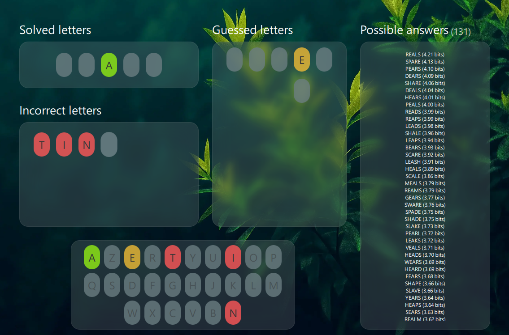

Qt / AlgorithmicWordleSolver
An algorithmic solver utilizing Information Theory and Entropy optimization to guess Wordle words in minimal tries.
C++
Qt
6.8.3
QML
Information
Theory
Desktop software
Details & Video →